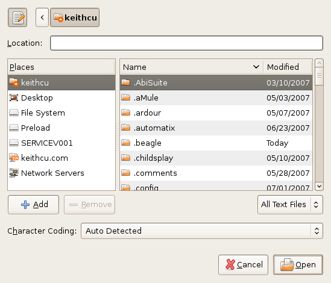
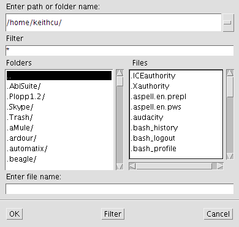

Sun's first mistake was that they failed to do what Bell Labs did with C and C++: create freely available compilers and runtimes for people to experiment with and extend. Instead, Sun locked up the Java codebase, letting few see it, and letting even fewer improve it, so that today, there exists only a small community of people, outside of Sun itself, improving Java.
For example, because Sun locked up their code, no one was able to port it to other processors. As I mentioned in the Linux chapter, Debian calls itself “The Universal Operating System” because it contains 18,000 software components that run on 15 different processor architectures:
Intel x86 / IA-32
AMD64
Motorola 68k
Sun SPARC
Alpha
Motorola/IBM PowerPC
PowerPC 64-bit
ARM
MIPS CPUs
HP PA-RISC
IA-64
S/390
SuperH
Big-Endian ARM
Renesas's 32-bit RISC
Debian supports 15 processors, but Sun's Java web page lists just four.
A wide variety of platforms allow the programmer to decide which processor is the best choice for his product. By contrast, on Sun's website, you can only download four architectures: x86, PowerPC, AMD64 and Sparc.
The fact that Java doesn't offer broad support on hardware platforms is a significant consideration. Why invest in a programming language that might not be usable with future hardware? C, and other free languages, provide tremendous hardware flexibility in their widespread adoption.
Flexibility and adaptability of programming tools is especially important for embedded devices because, unlike the PC environment where processors and operating systems have similar functionality, the software must be customized for embedding on low-end hardware, something that Sun did not enable.
For its first five years, when everyone was seriously considering using it, Java ran ten times slower than C because it was interpreted rather than compiled, exactly like Lisp. This would have been fixed a lot faster if Sun had involved and encouraged the existing free compiler development community.
Even in 2008, Java programs on my computer don't look like they should. For example, when a program asks to display a file chooser dialog box to the user, below are the results for a Java and a native application:


Java file chooser on Linux Standard Linux file chooser
How does Java not look native in 2008? Let us count the ways.
Java had many significant limitations for many years because all progress was held up by Sun.